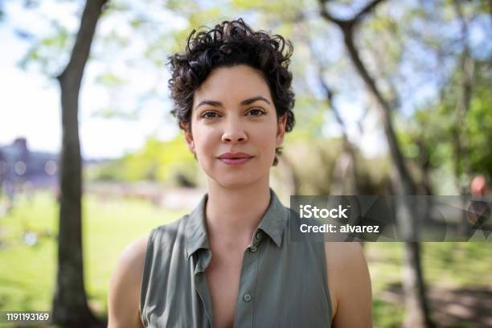
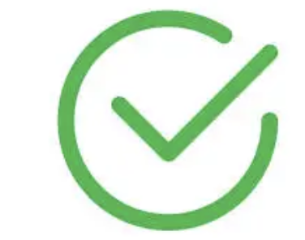

Cindy Garrido
Medellín, Colombia
Desarrolladora full stack | Ing. Ambiental y Sanitaria | Amante de la Naturaleza
Conocimiento de lenguajes de programación como Python y JavaScript, capacidad de trabajar con bases de datos y conocimiento de herramientas de control de versiones como Git.
Educación
Coding Dojo - Bootcamp de Desarrollo Full Stack
Enero 2025 - Mayo 2025
Triple cinturón negro en Python, MERN y C#
Solicitudes de Conexión (2)

Kai Schroder
Amira El-Masry
Tus Conexiones (500+)
Adrien Desplatz
Aarav Patel
Lina Kovacevic
Mateo Hernández
Yuna Kim
Liam O'Brien